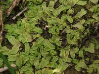

Exormothecaceae
No widely accepted common name
Exormothecaceae is a small family of complex thalloid liverworts in the order Marchantiales, primarily known for the genus Exormotheca. They are characteristically adapted to arid and semi-arid environments and are distinguished by their unique, often chimney-like or volcano-shaped air pores and chambers, and typically sessile or subsessile archegoniophores.
Overview
The Exormothecaceae family comprises a small group of highly specialized liverworts adapted to survive in seasonally dry, often harsh environments. The primary genus is Exormotheca, with a few species distributed across arid and semi-arid regions of Africa, the Mediterranean, Asia, and parts of the Americas. The genus Stephensoniella, sometimes included, shares similar habitat preferences.
These liverworts possess complex thalli with internal differentiation, but their most striking feature is the structure of their air chambers and pores. The pores are often elevated on distinct mounds or chimney-like structures, which is thought to relate to gas exchange regulation in dry conditions. The thalli are typically small, often growing gregariously on soil.
Reproductively, Exormothecaceae typically have archegonia borne on terminal receptacles (archegoniophores) that are sessile (unstalked) or have extremely short stalks, remaining close to the thallus surface. This contrasts with the often distinctly stalked archegoniophores seen in families like Marchantiaceae or Aytoniaceae. Their study offers valuable insights into the diverse strategies evolved by early land plants to cope with water scarcity.
Quick Facts
- Scientific Name: Exormothecaceae Müll.Frib.
- Common Name: (None widely used)
- Number of Genera: 1-2 (Exormotheca, sometimes Stephensoniella)
- Number of Species: Approximately 5-7
- Distribution: Arid and semi-arid regions worldwide (e.g., Mediterranean basin, Southern Africa, parts of Asia, SW North America, South America).
- Evolutionary Group: Bryophytes - Liverworts (Marchantiophyta) - Marchantiopsida - Marchantiales
Key Characteristics
Gametophyte (Thallus) Structure
The gametophyte thallus is adapted for survival in dry conditions:
- Form: Relatively small, often strap-shaped or somewhat oblong, sometimes dichotomously branched, typically growing flat against the substrate.
- Texture & Colour: Often somewhat fleshy or leathery, green to greyish-green, sometimes with purplish ventral surfaces. May curl or become desiccated during dry periods.
- Internal Structure: Possesses internal differentiation with air chambers containing photosynthetic filaments.
- Air Pores & Chambers: Highly distinctive. The dorsal surface features prominent, elevated pores resembling small volcanoes or chimneys. Each pore leads into a relatively large, undivided air chamber below. This structure is a key diagnostic feature.
- Rhizoids: Both smooth and pegged rhizoids arise from the ventral surface, anchoring the thallus and potentially aiding water absorption.
- Ventral Scales: Present, often in two rows, sometimes appendaged, contributing to water retention and protection of the apex.
Reproductive Structures
Species are typically monoicous or dioicous.
- Antheridia: Male organs are usually located in defined receptacles (androecia), often situated in a dorsal groove along the thallus midline or on specialized branches.
- Archegonia: Female organs are borne on an archegoniophore. A key feature of the family is that this archegoniophore is terminal on the main thallus or a leading branch and is typically sessile (unstalked) or has a very rudimentary, short stalk (subsessile). It appears as a cushion or disc-like structure at the thallus apex, bearing several archegonia and surrounded by protective scales.
Sporophyte
The sporophyte develops on the archegoniophore after fertilization:
- Foot: Embedded within the archegoniophore tissue.
- Seta: Usually very short.
- Capsule: Globose to ovoid, containing spores and elaters. The capsule wall may dehisce irregularly or via poorly defined valves. The sporophyte remains close to the thallus surface due to the sessile archegoniophore.
Spores and Elaters
The capsule releases spores and elaters.
- Spores: Typically relatively large, tetrahedral or globose, often with complex ornamentation.
- Elaters: Present, assisting in spore dispersal.
Field Identification
Identifying Exormothecaceae relies heavily on recognizing the unique air pore structure and the sessile archegoniophores, combined with their typical arid habitat.
Primary Identification Features
- Elevated Air Pores: The most striking feature is the presence of prominent, raised, chimney-like or volcano-shaped air pores on the dorsal surface of the thallus. This gives the surface a pustulose or bumpy appearance.
- Habitat: Found primarily in arid or semi-arid regions, growing on exposed soil, often calcareous, in open, sunny locations.
- Sessile/Subsessile Archegoniophore: If fertile with female structures, look for a terminal, cushion-like or disc-like archegoniophore that is unstalked or has an extremely short stalk, keeping the developing sporophytes very close to the thallus surface.
- Thallus Form: Small, strap-shaped or oblong thalli, often growing close together.
Secondary Identification Features
- Antheridial Grooves: Male plants/structures may show antheridia located within a distinct dorsal groove.
- Ventral Scales: Check for scales on the underside.
- Texture: May feel somewhat firm or leathery.
Seasonal Identification Tips
- Wet Season (Growth Period): Thalli will be green, turgid, and actively growing. This is the best time to observe reproductive structures (antheridial grooves, archegoniophores).
- Dry Season (Dormancy): Thalli may become desiccated, curled, or turn brownish/purplish, but the characteristic raised pores should still be visible on the dried thallus surface. They are highly drought-tolerant.
Common Confusion Points
Exormotheca might be confused with:
- Riccia species (Ricciaceae): Some terrestrial Riccia grow in similar arid habitats and can form rosettes or strap-like thalli. However, Riccia lacks the complex internal structure (air chambers are different or absent) and the distinctly elevated, chimney-like pores of Exormotheca. Also, Riccia sporophytes are embedded within the thallus, not borne on an archegoniophore (even a sessile one).
- Targionia (Targioniaceae): Also found in dry habitats, but Targionia has simple pores (not elevated chimneys) and a distinctive ventral, bivalved involucre protecting the sporophyte, lacking a defined archegoniophore.
- Corsinia (Corsiniaceae): Shares sessile archegoniophores and arid habitat preference, but differs in air pore structure (simpler) and often has dorsal scales covering the archegonial cushion.
- Other complex thalloids (e.g., Aytoniaceae): These typically have distinctly stalked archegoniophores and different air pore structures.
Key differentiator: Look for the unique, tall, chimney-like air pores on the dorsal surface combined with the sessile/subsessile terminal archegoniophore in arid/semi-arid habitats.
Field Guide Quick Reference
Look For:
- Prominent, raised, chimney-like air pores
- Arid/semi-arid habitat (exposed soil)
- Sessile or very short-stalked terminal archegoniophore
- Small, strap-shaped thallus
Key Distinctions:
- Pores distinctly elevated (unlike Targionia, Riccia, most others)
- Archegoniophore sessile (unlike Aytoniaceae, Marchantiaceae)
- Complex internal chambers (unlike Riccia)
- No ventral bivalved involucre (unlike Targionia)
Notable Examples
The family is small, primarily represented by the genus Exormotheca.

Exormotheca pustulosa
(Pustulose Liverwort - descriptive)
A relatively widespread species found in Mediterranean climates and other semi-arid regions. It clearly shows the characteristic tall, chimney-like air pores giving the thallus a 'pustulose' appearance. It grows on soil, often forming small patches.

Exormotheca tuberifera
(Tuberous Liverwort - descriptive)
Known from Southern Africa and potentially other arid regions. This species is notable for sometimes forming underground tubers, likely as a survival mechanism during extreme drought. It shares the characteristic elevated pores of the genus.

Stephensoniella brevipedunculata
(Short-stalked Liverwort - descriptive)
Often placed in Exormothecaceae (or its own family). Found in the Himalayas and other parts of Asia. It shares the arid habitat preference and has somewhat elevated pores (though perhaps less chimney-like than Exormotheca) and a very short-stalked ('brevipedunculate') archegoniophore.
Phylogeny and Classification
Exormothecaceae belongs to the order Marchantiales. Its exact phylogenetic position has been debated, but molecular studies often place it sister to or near Corsiniaceae, another family adapted to dry conditions with sessile reproductive structures. Both families represent lineages distinct from the main groups possessing stalked archegoniophores (like Aytoniaceae, Marchantiaceae) or those with highly reduced structures (like Ricciaceae).
The family showcases remarkable adaptations to xeric (dry) environments, including the specialized air pore morphology, desiccation tolerance mechanisms, and reproductive strategies involving sessile structures that keep sporophytes close to the potentially moisture-retaining thallus and substrate.
Position in Plant Phylogeny
- Kingdom: Plantae
- Division: Marchantiophyta (Liverworts)
- Class: Marchantiopsida
- Order: Marchantiales
- Family: Exormothecaceae
Evolutionary Significance
Exormothecaceae is significant for understanding:
- Adaptation to Aridity: Represents a specialized lineage highly adapted to survive extreme drought through morphological (e.g., pore structure, tubers) and physiological means.
- Evolution of Reproductive Structures: The sessile archegoniophore contrasts with the stalked structures common in other Marchantiales, suggesting alternative evolutionary pathways for protecting and positioning the sporophyte generation.
- Diversity within Marchantiales: Highlights the broad range of morphological and ecological strategies within this single order of liverworts.